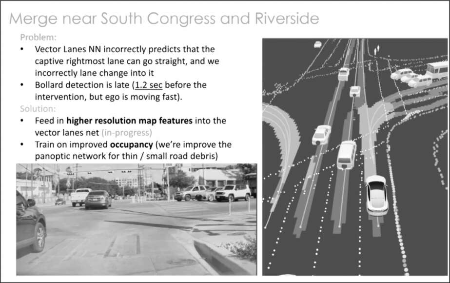

Loại bỏ radar
Việc Tesla có nên sử dụng radar trong hệ thống lái tự động Autopilot hay chỉ dựa vào dữ liệu hình ảnh từ camera vẫn là một vấn đề gây tranh cãi. Nó cũng trở thành ví dụ điển hình cho phong cách quyết định của Musk: táo bạo, cứng đầu, liều lĩnh, có tầm nhìn, dựa trên nguyên lý vật lý cơ bản, nhưng đôi khi lại linh hoạt đến bất ngờ.
Ban đầu, ông khá cởi mở về vấn đề này. Khi Tesla Model S được nâng cấp vào năm 2016, ông miễn cưỡng cho phép nhóm Autopilot sử dụng radar phía trước bên cạnh 8 camera của xe. Và ông cũng cho phép các kỹ sư phát triển hệ thống radar riêng, có tên là Phoenix.
Nhưng đến đầu năm 2021, việc sử dụng radar bắt đầu gây ra vấn đề. Tình trạng thiếu hụt chip do COVID khiến các nhà cung cấp của Tesla không thể đáp ứng đủ. Hơn nữa, hệ thống Phoenix mà Tesla đang tự phát triển cũng không hoạt động tốt. "Chúng ta có ba lựa chọn," Musk tuyên bố trong một cuộc họp định mệnh vào đầu tháng 1 năm đó. "Chúng ta có thể dừng sản xuất xe. Chúng ta có thể làm cho Phoenix hoạt động ngay lập tức. Hoặc chúng ta có thể loại bỏ hoàn toàn radar."
Không còn nghi ngờ gì về lựa chọn mà ông ưa thích. "Chúng ta hoàn toàn có thể làm tốt việc này chỉ với giải pháp thị giác," ông nói. "Việc không cần cả radar và thị giác để nhận diện cùng một vật thể sẽ là một bước đột phá."
Một số thành viên cấp cao trong nhóm, đặc biệt là chủ tịch Jerome Guillen, đã phản đối. Ông lập luận rằng việc loại bỏ radar sẽ không an toàn. Radar có thể phát hiện các vật thể mà camera hoặc mắt người khó nhìn thấy. Một cuộc họp được lên lịch cho toàn bộ nhóm để tranh luận về vấn đề này và đưa ra quyết định. Sau khi tất cả các lập luận được đưa ra, Musk im lặng khoảng bốn mươi giây. Cuối cùng ông nói: "Tôi quyết định rồi. Loại bỏ radar." Guillen tiếp tục phản đối, và Musk đã nổi giận. "Nếu anh không loại bỏ nó," ông nói, "tôi sẽ tìm người khác làm."
Vào ngày 22 tháng 1 năm 2021, ông đã gửi một email. "Từ nay trở đi, hãy tắt radar," email viết. "Nó là một điểm yếu tệ hại. Tôi không đùa đâu. Và rõ ràng là việc lái xe chỉ bằng camera đang hoạt động tốt." Guillen sớm rời khỏi công ty.
Tranh cãi
Quyết định loại bỏ radar của Musk đã gây ra một cuộc tranh luận công khai. Một cuộc điều tra chuyên sâu của tờ New York Times do Cade Metz và Neal Boudette thực hiện đã tiết lộ rằng nhiều kỹ sư của Tesla đã bày tỏ sự lo ngại sâu sắc. "Không giống như các chuyên gia công nghệ tại hầu hết các công ty khác đang nghiên cứu về xe tự lái, ông Musk khẳng định rằng khả năng tự hành có thể đạt được chỉ bằng camera," họ viết. "Nhưng nhiều kỹ sư của Tesla đã đặt câu hỏi liệu việc chỉ dựa vào camera mà không có sự hỗ trợ của các thiết bị cảm biến khác có đủ an toàn hay không và liệu ông Musk có đang hứa hẹn quá nhiều về khả năng của Autopilot hay không."
Edward Niedermeyer, tác giả cuốn sách phê phán Tesla có tựa đề Ludicrous, đã đăng một loạt bài tweet. "Những cải tiến đối với các hệ thống hỗ trợ lái xe phổ biến đang hướng ngành công nghiệp đến việc sử dụng nhiều radar hơn, và thậm chí cả các phương thức mới lạ hơn như LiDAR và hình ảnh nhiệt," ông viết. "Tesla, ngược lại, đang đi lùi." Và Dan O'Dowd, một doanh nhân về bảo mật phần mềm, đã đăng một quảng cáo toàn trang trên tờ New York Times gọi hệ thống tự lái của Tesla là "phần mềm tệ nhất từng được bán bởi một công ty Fortune 500."
Tesla từ lâu đã là mục tiêu điều tra của Cơ quan An toàn Giao thông Đường cao tốc Quốc gia, và những cuộc điều tra này đã tăng lên sau khi radar bị loại bỏ vào năm 2021. Trong một nghiên cứu, cơ quan này đã ghi nhận 273 vụ tai nạn do tài xế Tesla sử dụng một số cấp độ của hệ thống hỗ trợ lái xe gây ra, trong đó 5 vụ dẫn đến tử vong. Cơ quan này cũng đã mở một cuộc điều tra về 11 vụ va chạm của Tesla với các phương tiện khẩn cấp.
Musk tin rằng tài xế kém, chứ không phải phần mềm lỗi, mới là nguyên nhân chính gây ra hầu hết tai nạn. Trong một cuộc họp, ông đề xuất sử dụng dữ liệu từ camera trên xe, một trong số đó nằm bên trong xe và hướng về phía tài xế, để chứng minh lỗi của người lái. Một nữ nhân viên phản đối: "Chúng tôi đã thảo luận kỹ với đội ngũ bảo mật về vấn đề này. Chúng tôi không thể liên kết hình ảnh từ camera với một chiếc xe cụ thể, ngay cả khi xảy ra tai nạn, hoặc ít nhất đó là hướng dẫn từ luật sư của chúng tôi."
Musk không hài lòng. Khái niệm "đội ngũ bảo mật" không làm ông thấy dễ chịu. "Tôi là người ra quyết định ở công ty này, không phải đội ngũ bảo mật," ông nói. "Tôi thậm chí còn không biết họ là ai. Họ kín tiếng đến mức chẳng ai biết họ là ai." Mọi người cười gượng gạo. "Có lẽ chúng ta có thể hiển thị thông báo cho mọi người biết rằng nếu họ sử dụng FSD (Lái xe tự động hoàn toàn), chúng tôi sẽ thu thập dữ liệu trong trường hợp xảy ra tai nạn," ông đề xuất. "Như vậy có được không?"
Người phụ nữ suy nghĩ một lúc rồi gật đầu. "Miễn là chúng ta thông báo cho khách hàng, tôi nghĩ vậy là được."
Phoenix trỗi dậy
Dù cứng đầu, Musk vẫn có thể bị thuyết phục bởi bằng chứng. Ông kiên quyết loại bỏ radar vào năm 2021 vì chất lượng kỹ thuật lúc đó không đủ độ phân giải để bổ sung thông tin hữu ích cho hệ thống thị giác. Tuy nhiên, ông đồng ý cho các kỹ sư tiếp tục chương trình Phoenix để xem họ có thể phát triển công nghệ radar tốt hơn hay không.
Lars Moravy, trưởng bộ phận kỹ thuật xe của Musk, đã giao nhiệm vụ này cho Pete Scheutzow, một kỹ sư người Đan Mạch. "Elon không phản đối radar," Moravy nói, "ông ấy chỉ phản đối radar kém chất lượng." Nhóm của Scheutzow đã phát triển một hệ thống radar tập trung vào những trường hợp mà người lái xe có thể không nhìn thấy. "Các anh có thể đúng," Musk nói, và ông đã bí mật phê duyệt việc thử nghiệm hệ thống mới trên Model S và Model Y, những mẫu xe đắt tiền hơn.
"Đây là loại radar tinh vi hơn nhiều so với radar ô tô thông thường," Musk nói. "Nó giống như radar trong hệ thống vũ khí. Nó tạo ra hình ảnh về những gì đang diễn ra chứ không chỉ nhận tín hiệu phản hồi." Liệu ông có thực sự định trang bị nó cho những chiếc xe cao cấp của Tesla? "Việc thử nghiệm là xứng đáng. Tôi luôn cởi mở với bằng chứng từ các thí nghiệm vật lý."

Slide trình bày tiến độ xe tự lái